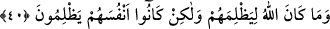
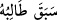
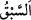

apaçık deliller getirmişti de onlar yeryüzünde büyüklük taslamışlardı. Halbuki
(azabımızı aşıp) geçebilecek değillerdi.
“Kârûn’u, Firavun’u ve Hâmân’ı da...” cümlesi yukarıda geçen “Âd” ismine
atfedilmişlerdir. Yani, onları da helâk ettik, demektir. Kârûn’un önce zikredilmesi, daha
önce de ifâde edildiği gibi nesebinin şeref ve üstünlüğünden dolayıdır. Ayrıca bunda
Kureyş kâfirlerine de bir uyarı ve hatırlatma vardır ki, neseblerinin üstünlüğü onları
Allah’ın azâbından kurtarmaz. Nitekim Kârûn, Mûsa (a.s)’ın amcazâdesi olmasına
rağmen, bu akrabalık onu azabtan kurtaramamıştı.
“Andolsun ki, Musa onlara apaçık deliller” ve hârikulâde mûcizeler “getirmişti de
onlar” hakkı kabul etmekten yüz çevirip “yeryüzünde büyüklük taslamışlardı. Halbuki
(azabımızı aşıp) geçebilecek değillerdi.” Yani, onlar Allah’ın azâbından kaçıp
kurtulamadılar; bilakis Allah’ın emri onları yakaladı ve helâk oldular.
“Sâbikun” kelimesi; Arapların “ Onu arayıp soran geçti” sözünden alınmıştır.
Bu söz, bir kimse aradığını kaçırdığı ve ona yetişemediği zaman kullanılır.
Râğıb Isfahânî der ki: “ kelimesinin asıl anlamı; yürüyüşte ve koşuda öne
geçmektir. Sonra diğer öne geçen şeyler için de bu kelime kullanılmıştır. Nitekim
bazıları der ki: “Allah Teâlâ her mükellefi amelinin karşılığına göre taleb eder; ameli
hayırsa karşılığı da hayır olur, ameli şer ise karşılığı da şerdir.”
Mesnevî’de der ki:
Akıl gözüyle kulağında Hak mührü varsa,
Bu mühür, Eflatun da olsa onu hayvan kılar.
40. Nitekim, onlardan her birini günahı sebebiyle cezâlandırdık. Kiminin üzerine
taşlar savuran rüzgârlar gönderdik, kimini korkunç bir ses yakaladı, kimini yerin
dibine geçirdik, kimini de suda boğduk. Allah onlara zulmetmiyor, asıl onlar
kendilerine zulmediyorlardı.
“Nitekim, onlardan her birini günahı sebebiyle cezâlandırdık.”
Bu cümle, onların Allah’ın azâbından kurtulamadıklarının üstü kapalı bir açıklama
cümlesidir. Yani, yukarıda zikredilen kavimlerin her birini işledikleri günahların ve
suçlarının durumuna göre cezâlandırdık, demektir. “Her biri” mef’ûlü’nün takdiminden